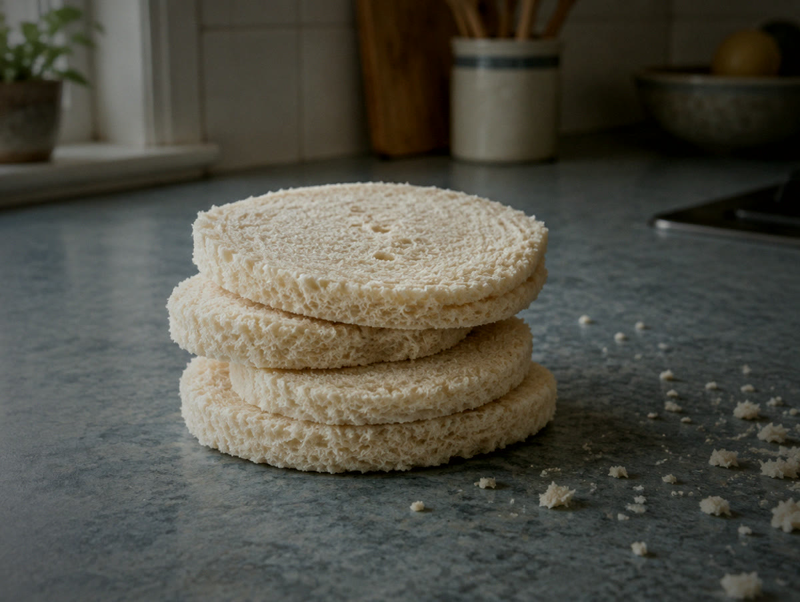
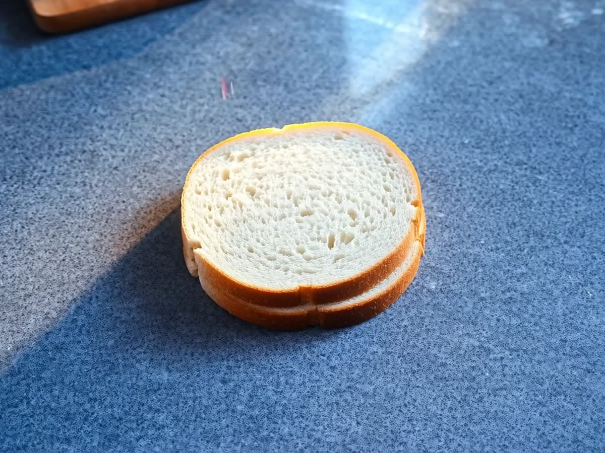
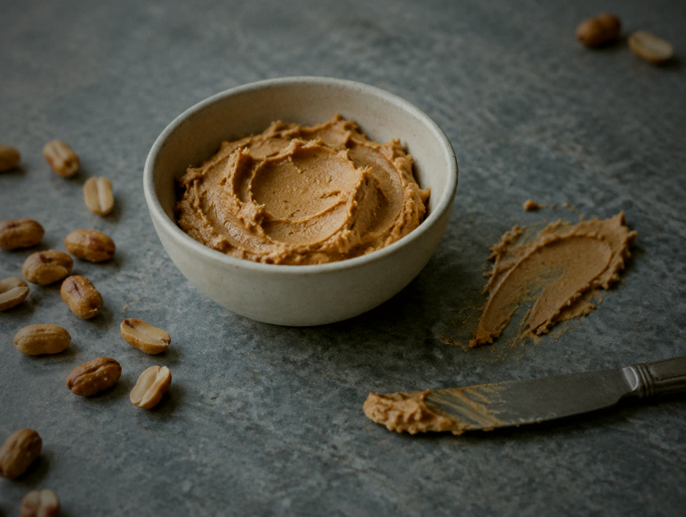
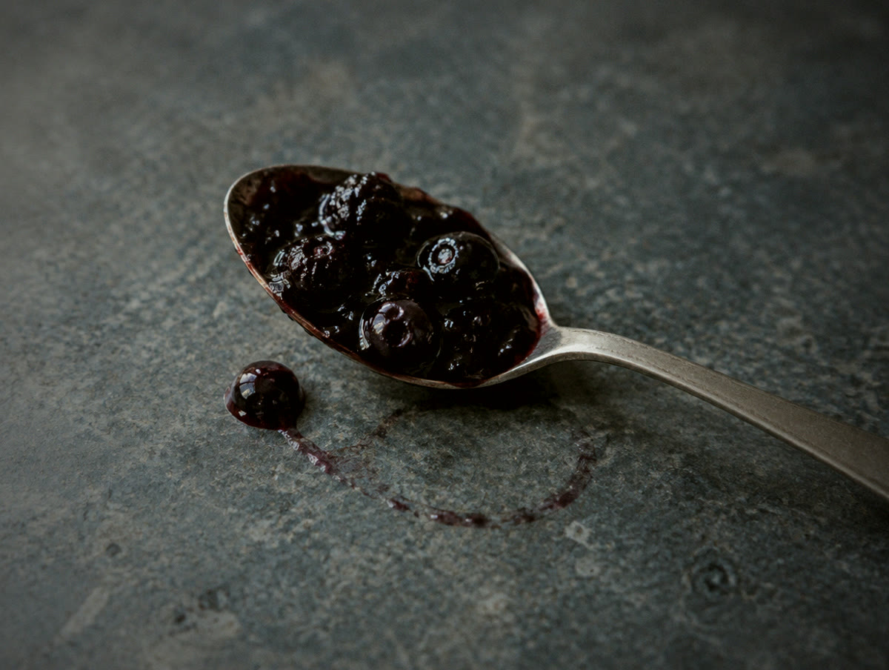

01
خبز توست طري
بدون قشرة، ومقصوص دائري عشان يتاكل من أي طرف.
زبدة فول سوداني ومربى توت. وبس.
مقفولة من كل جهة.
ما يطري خبزها، وما فيها قشرة تنرمى.
خبز توست طري، زبدة فول سوداني، ومربى التوت، مقفولين مع بعض من كل جهة قبل التجميد. ما فيه شي تفتحه، ولا شي تدهنه، ولا شي ترميه.

ما فيه قائمة طويلة تقراها وانت واقف عند الفريزر. كل شي داخل فيها تعرفه.

بدون قشرة، ومقصوص دائري عشان يتاكل من أي طرف.

ثقيلة ودسمة، وهي الجدار اللي يمنع المربى يوصل للخبز.

حلو بالقدر اللي يخلّي اللقمة تخلص كاملة.
اضغط على الزر واستمر، وشوف الحافة كيف تنقفل. هذي الضغطة هي المنتج كله، وهي السبب في كل شي تحت.
وزن لقمة طفل، مو وجبة ترجع نص مأكولة.
خبز، زبدة فول سوداني، مربى توت.
التجميد يسوي هالشغلة، فما فيه داعي نضيف شي.
محلين يبيعونها اليوم، وفيه غيرهم جاي. إذا ما لقيتها عندك، راسلنا وقل لنا وين أنت.
لا. البرودة هي اللي تحفظ الأكل، وهذا سبب التجميد من الأساس. ما نضيف شي عشان تعيش على الرف، لأنها أصلاً ما تجلس على رف.
من 20 إلى 30 دقيقة برّا الفريزر. حطها في الشنطة الصباح، وتكون طرية وجاهزة مع وقت الفسحة.
زبدة الفول السوداني تجلس بين المربى والخبز وتمسك الرطوبة، فالخبز يظل طري مو مبلول. وهذا سبب ترتيب الطبقات بهالشكل.
حجمها لقمة طفل، مو ساندويش كبير لبالغ. الساندويش الكبير عادة يرجع نص مأكول، وهذي ما ترجع.
فيها فول سوداني، فهي ما تناسب أي شخص عنده حساسية منه. وفيه مدارس تطلب من الأهالي عدم إرسال منتجات الفول السوداني، فراجع نظام مدرستك قبل ما تحطها في الشنطة.
نضيف محلات أول بأول. راسلنا وقل لنا منطقتك، وهذا يساعدنا نقرر وين نروح بعدين.